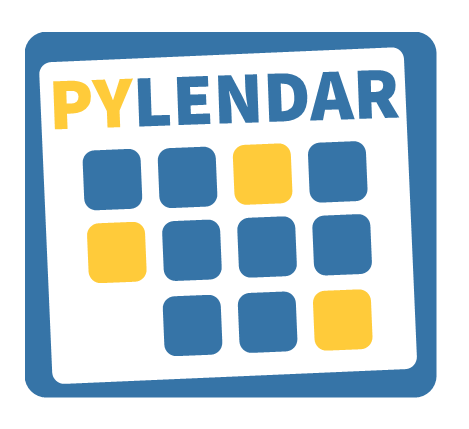

עדכון: כרגע יש צוות פרונט אנד שמורכב ממני @Ode@aviadamar @Yam מלווה אותנו בתהליך. אנחנו עובדים על תצוגת חודש, תצוגת יום- שבוע, והוספת אירוע. בהקדם אנחנו נוציא מוקאפים, וCSS עם תיעוד של קלאסים שכולם יוכלו להשתמש.
תיאור כללי
לאפליקציה יקראו PYLENDAR והשפה העיצובית שלה תיהיה מחווה של שימוש בצבעים של פייתון. מתוך מחשבה שמה שמיחד את הפרויקט הזה זה יותר מכל זה שקורס שלנו מרים את זה ביחד ושזה התוצר סיום שלנו
מה ההצעה כולל
לוגו בפורמט SVG שיתאים לרספונסיביות:

השפה העיצובית של הממשק תהיה ברוח הלוגו: מלבנים מעוגלים מעט בקצוות, הצבעים המרכזיים הם הכחול והצהוב של הפייתון. ולבן.
מסמסך CSS בעיקר על העיצוב של האלמנטים, פחות על הUI מבחינת סידור האלמנטים בממשק.
פירוט של שמות הCLASS של האלמנטים.
כולל שינויים בקוד
בפרונט אנד כמובן, בCSS
האם יהיו שינויים במסד הנתונים? אם כן, איפה?
לא, השינוי הזה לא תלוי במסד הנתונים ולא יגרור בו שינוי.
האם יהיה שינוי ב־frontend? אם כן, איפה?
כן, הוא בגדול יכתיב את רוב הCSS, עוד אין לי מוק, אבל אם יאהבו את הכיוון אכין אחד.
אילו טסטים יגרמו לטיקט להיחשב כ"עובד", ויאפשרו לנו לסגור את הטיקט ולהגדיר את המשימה כהושלמה?
תלוי לאן נרחיב את הישום של העקרונות האלה אבל:
כל הכפתורים עובדים
לוגו משנה את הגודל שלו בהתאם למסך שהוא מוצג עליו
אשמח אם תעזרו לי לחשוב על עוד טסטים קונקרטיים ורלוונטים.
יכול להיות במיתוג הזה משהו מבלבל כי אולי יחשבו שזה איזה פריימוורק או מודול כזה או אחר מצד אחד. מצד שני דווקא ברוח האנשים שעושים את הפרוייקט הזה, כאלה שלמדו להשתמש ולאהוב פייתון בכמעט שנה האחרונה ושזה מה שאסף אותם יחד, זה משהו שדווקא אולי יכול להיות סיפור יפה של תוכנה. מניח שלמשתמשים שלא מגיעים מעולם התכנות זה לא יבלבל אותם.
אהבתי! אני תמיד חושב שלא משנה כמה הקופסה חכמה מבפנים, צריכה להיות שיווקית מספיק! אני בעד
לייק 1
Ode
אפשר להרחיב מה הטיקט כולל?
עיצוב CSS או הנחת התשתית כדי שאחרים יוכלו להוסיף את ה-CSS שלהם? אני רואה את זה כצוואר בקבוק אם בן אדם אחד עושה את כל ה-CSS לכל הפיצ׳רים וגם דואג להכנס לכל טמפלייט ולהטמיע את ה-classים הנכונים.
אולי צריך בעצם שמי שעושה את זה יבנה מסמך הנחיות למפתח (כמו התיעוד של bootstrap) שהמפתחים יוכלו לרפרנס… אבל אני רואה כאן המון עבודה כדי לבנות את העיצוב + לתעד אותו
אלטרנטיבה יכולה להיות להשתמש באמת ב-bootstrap ורק להתאים אותו אלינו
בכל אופן, כנראה שכדאי לפצל את הטיקט למובייל ודסקטופ (וששני אנשים יעבדו על זה) עם דגש על mobile-first
PureDream
נשמע לי שהיא צודקת, אולי צריך להגדיר את זה באמת כמסמך הנחיות
לייק 1
sagi.zo
היי תודה על התגובה המפורטת!
אני בתור התחלה אשמח להציג מוקאפ יחסית מפורט. בגדול אני מאוד נהנה לעבוד על CSS וסך הכל מרגיש בזה שליטה (בעיקר כי זה מזכיר לי כל מיני טכניקות של עבודה בצוות על שפה עיצובית). אפשר שבעצם מה שזה יכלול זה את הCSS של האלמנטים ופחות את העיצוב הממישק בGRID או FLEX ואז זה יכול למנוע את הצוואר בקבוק מבחינת העמדת הממשק (צריך בעיקר שהשמות של הקלאסים והID יהיו מוסכמים ואז זה פחות משנה מבחינת אסתטיקה על מה עובדים תוך כדי). כמובן זה אומר לרכז את זה בתוך מסמך
מה דעתך?
בכל מקרה ערכתי את ההצעה בהתאם
sagi.zo
מבקש בדיקההההההההההה
pelled.idan
אחלה רעיון!
לדעתי עדיף שנעשה הצבעה לגבי השם והצבעים
לייק 1
Yam
אושרת. אולי שווה שאתה, @aviadamar ו־@Ode תתאגדו לאיזה צוות frontend.
אין לי בעיה שנפתח ארבעתנו קבוצת טלגרם ונזיז את זה קדימה.
סליחה אם נידבתי/דחפתי לקבוצה סתם, זה משהו שלדעתי יכול לעבוד טוב.
מה דעתכם?
3 לייקים
Ode
יס, אני אשמח, יש לי הרבה נסיון בווב וספציפית השד שקוראים לו CSS
לייק 1
aviadamar
אם לא את זה מי כן?!
sagi.zo
אני ממש אשמח! על מה @Ode ו @aviadamar עובדים כרגע?
Ode
חחחחחחחח
איור ועיצוב גרפי זה לא בהכרח לווב (גם התעסקתי הרבה בדפוס ועבדתי בבית דפוס כסוג של דפסית )
אבל בהחלט יצא לי לאדמן אתרים (ספציפית וורדפרס) וחלק מזה היה לעצב אותם


 )
)